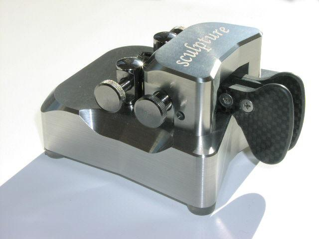

Essex CW Club:
CW club from the UK. The home page of the clubs writes:
In November 2009, a small group of CW enthusiasts decided to form a specialist group for those with a common interest in maintaining and promoting the use of Morse code on the Amateur Radio bands. The intention is to facilitate a number of CW events and bring together those skilled in Morse code across traditional radio clubs. This will form a critical mass of otherwise dispersed practitioners and promote use of the mode within the hobby.
We are affiliated to the RSGB.
The club callsigns are GX1FCW and G8CW. Our special short contest callsign is G4C.